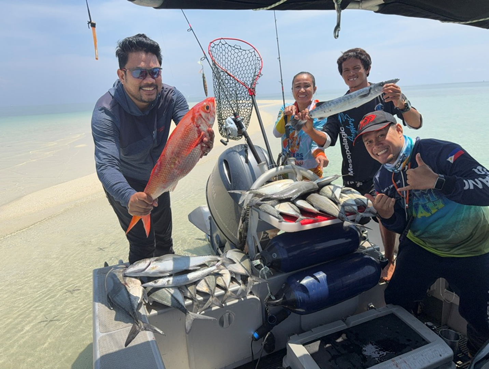
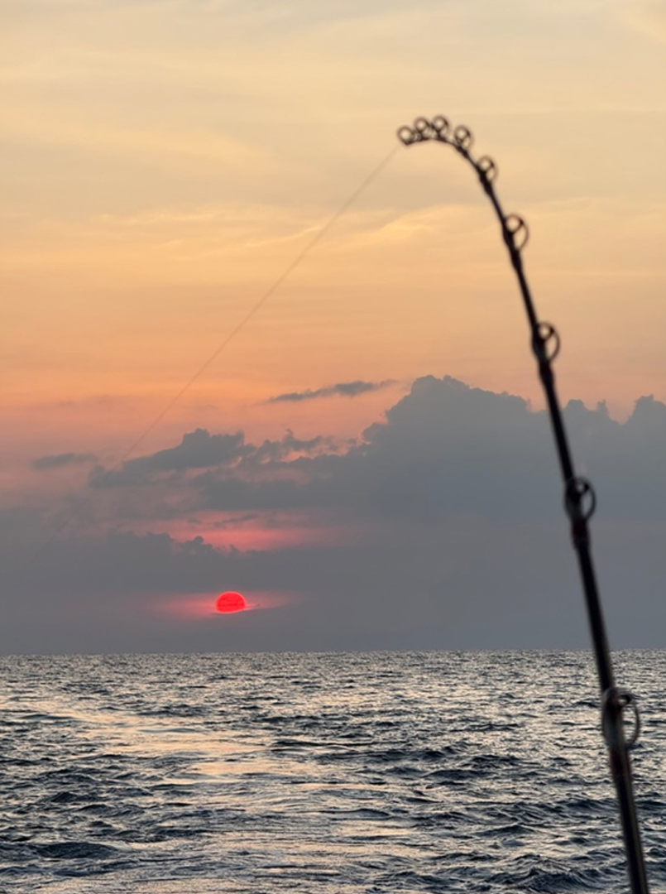
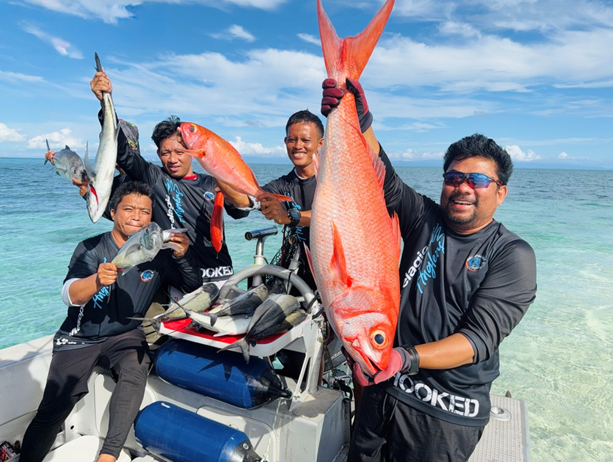
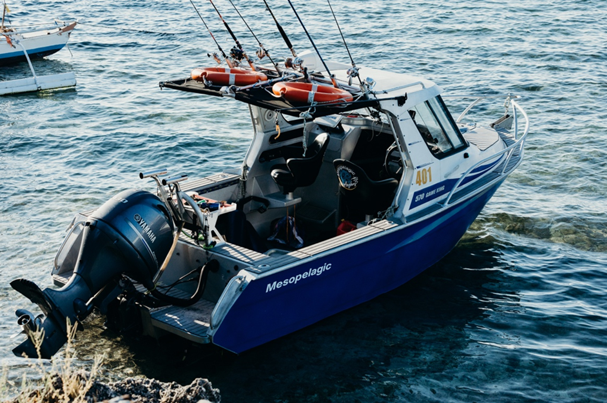

Charter Session Timings
Charter Session Timings
Each session is structured around daylight, tide movement, sea condition, target activity, and group preference.
Available WindowsMorning Afternoon Night Ops Full-Day
Four session formats for different fishing conditions.
Golden Hour Session
6 Hours
5:00 AM – 11:00 AM
Best for sunrise activity and aggressive surface-feeding windows.
Sunset Drift Session
6 Hours
1:00 PM – 7:00 PM
Targets late-afternoon bite activity with a sunset run back to Hadsan.
Nocturnal Deep-Sea Session
12 Hours
5:00 PM – 5:00 AM
Built around underwater blue light support and night-feeding behavior.
Ultimate Full-Day Expedition
14 Hours
5:00 AM – 7:00 PM
Spans multiple feeding windows and wider route opportunities.
How to Choose
Match the session to your fishing goal.
01
Daytime sessions
Morning and afternoon sessions are practical for focused 6-hour runs, daylight visibility, and approachable offshore fishing.

02
Nocturnal sessions
The night session is more demanding and built around blue lights, bait aggregation, and predator movement after dark.

03
Full-day expedition
The full-day option gives the route more time to cover distance and fish across multiple windows.

Booking Note
Availability depends on weather and route suitability.
Send your preferred session, date, tier, and group size. The team will recommend a practical option.